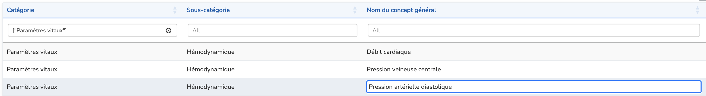

Concepts généraux
La page Concepts généraux est le point d'entrée principal pour parcourir le dictionnaire de données INDICATE. Elle affiche tous les concepts généraux organisés par catégorie et sous-catégorie.

Pourquoi des concepts généraux ?
Le dictionnaire de données INDICATE est organisé autour de concepts généraux plutôt que de codes terminologiques individuels. Ce choix de conception reflète la façon dont les chercheurs cliniques travaillent réellement : lors de la conception d'un protocole d'étude, ils parlent de « Fréquence cardiaque » ou de « Créatinine sérique » plutôt que de codes LOINC spécifiques avec leurs variations de méthode et de prélèvement.
Ce niveau d'abstraction offre plusieurs avantages :
- Facilite la conception de projets de recherche — les cliniciens et chercheurs peuvent rapidement identifier les variables disponibles dans le dictionnaire sans naviguer dans des hiérarchies terminologiques complexes
- Améliore la communication — fournit un langage commun entre data scientists et cliniciens, comblant le fossé entre les codes terminologiques techniques et les concepts cliniques
- Simplifie les décisions ETL — chaque concept général regroupe des codes terminologiques apparentés, facilitant les décisions d'alignement des données sources
Catégories et sous-catégories
Les concepts généraux sont organisés en catégories (par ex. Paramètres vitaux, Biologie, Traitements) et sous-catégories (par ex. Hémodynamique, Ventilatoire) pour aider les utilisateurs à naviguer efficacement dans le dictionnaire.
Rechercher dans le dictionnaire
L'application propose plusieurs moyens pour trouver des concepts dans le dictionnaire :
Badges de catégorie
En haut de la page, les badges de catégorie permettent de filtrer rapidement le tableau par catégorie. Cliquez sur un badge pour afficher uniquement les concepts de cette catégorie. Cliquez à nouveau pour retirer le filtre.

Filtres de colonnes
Chaque colonne du tableau dispose d'un champ de filtre en haut. Ces filtres effectuent une correspondance exacte — seules les lignes contenant exactement le texte saisi seront affichées. Les filtres de colonnes peuvent être combinés pour des recherches précises.
Recherche approximative
Le champ 'Recherche approx' (en haut à droite) recherche dans la colonne nom du concept général en utilisant une correspondance approximative. C'est utile lorsque vous n'êtes pas sûr de l'orthographe exacte ou que vous souhaitez trouver des concepts similaires.
Par exemple, rechercher « kreatinin » (avec une faute de frappe) trouvera quand même « Créatinine » et les concepts associés, facilitant la recherche même avec des erreurs d'orthographe.
Mode édition
Le dictionnaire peut être modifié par les utilisateurs disposant des permissions appropriées. Pour entrer en mode édition, cliquez sur le bouton Editer la page en haut à droite de la page.

En mode édition, vous pouvez :
Supprimer des concepts généraux
Cliquez sur le bouton Supprimer dans la colonne Actions pour supprimer un concept général du dictionnaire. Une boîte de dialogue de confirmation apparaîtra avant la suppression.
Modifier les noms en ligne
Double-cliquez sur n'importe quelle cellule des colonnes Catégorie, Sous-catégorie ou Nom du concept général pour modifier la valeur directement dans le tableau.
Ajouter de nouveaux concepts généraux
Cliquez sur le bouton Ajouter un concept pour créer un nouveau concept général. Un formulaire apparaîtra où vous devrez renseigner :
- Nom du concept général — Le nom du nouveau concept
- Catégorie — Sélectionnez parmi les catégories existantes ou créez-en une nouvelle
- Sous-catégorie — Sélectionnez parmi les sous-catégories existantes ou créez-en une nouvelle

Pour créer une nouvelle catégorie ou sous-catégorie, cliquez sur le bouton + à côté du menu déroulant. Entrez le nouveau nom et il sera ajouté à la liste des options disponibles.
Afficher les détails d'un concept
Pour afficher les détails d'un concept général, y compris ses concepts OMOP associés et les commentaires experts :
- Double-cliquez sur une ligne du tableau, ou
- Sélectionnez une ligne et cliquez sur le bouton Voir les détails
Cela vous amènera à la page Détails d'un concept général.